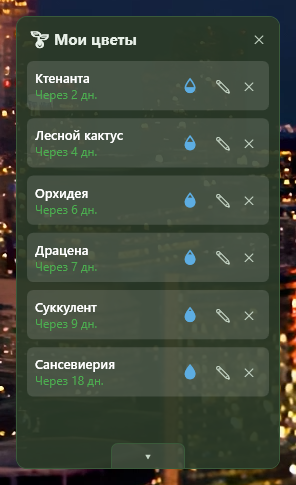
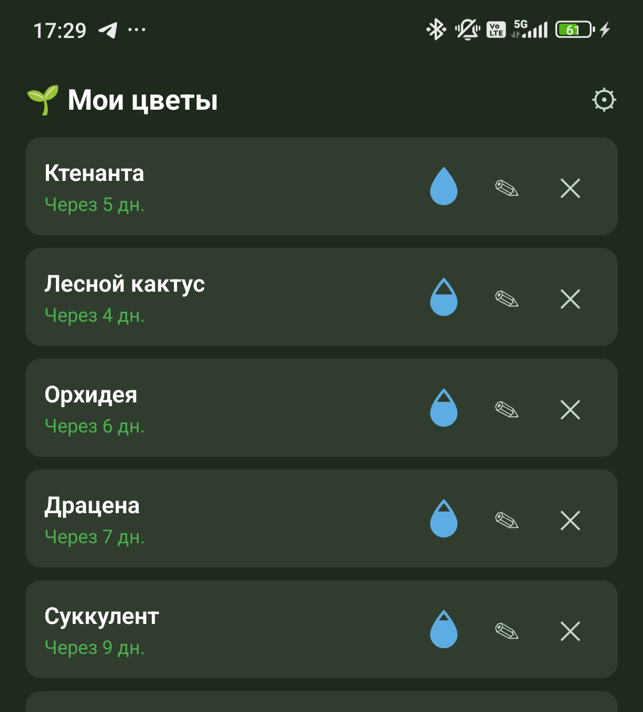

Plant Alarm
Виджет для Windows и приложение для Android, которые напоминают полить растения — с синхронизацией между телефоном и десктопом по локальной сети, без облака и аккаунтов.
Виджет для Windows и приложение для Android, которые напоминают полить растения — с синхронизацией между телефоном и десктопом по локальной сети, без облака и аккаунтов.


Показывает, сколько «воды» осталось до следующего полива, и постепенно пустеет к сроку — на глаз видно, кому пора.
Кнопка «Полить» активна всегда. Если поливаете раньше срока — приложение переспросит, а не заблокирует кнопку.
Дату последнего полива можно указать при добавлении растения и поправить позже в редактировании.
Телефон напомнит, когда придёт время полива, даже если приложение закрыто.
Телефон и десктоп сверяют списки растений по локальной сети — двустороннее слияние изменений, без облака.
У каждого растения — собственный график полива в днях, а не общий для всех.
Готовый .exe, .NET на компьютере не нужен — на странице релизов.
Готовый .apk — там же, на странице релизов.